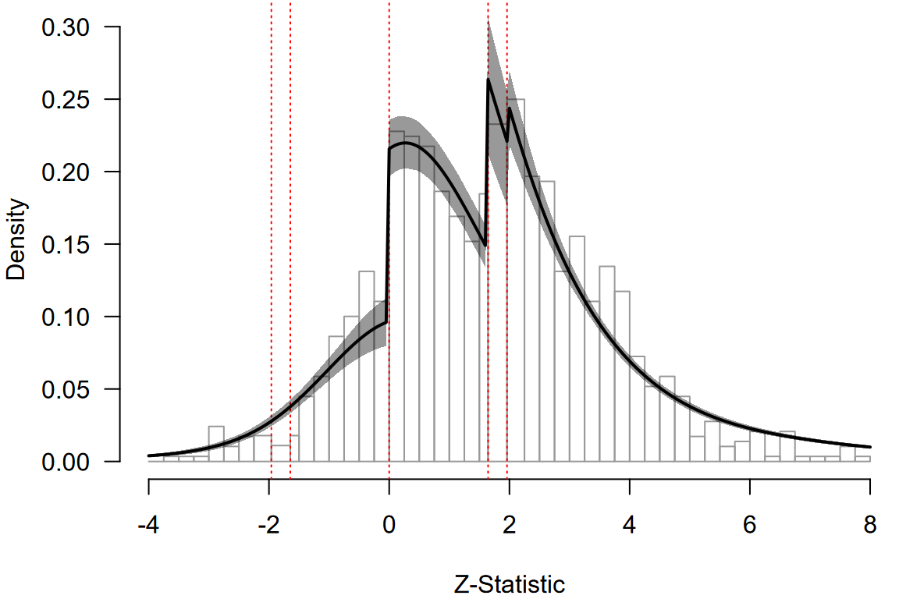

Multilevel Robust Bayesian Model-Averaged Meta-Regression
František Bartoš
2025
Source:vignettes/MultilevelRoBMARegression.Rmd
MultilevelRoBMARegression.RmdThis vignette accompanies the manuscript Robust Bayesian Multilevel Meta-Analysis: Adjusting for Publication Bias in the Presence of Dependent Effect Sizes preprinted at PsyArXiv (Bartoš et al., 2025).
This vignette reproduces the second example from the manuscript, re-analyzing data from Havránková et al. (2025) on the relationship between beauty and professional success (1,159 effect sizes from 67 studies). We investigate whether the effect depends on the type of customer contact (“no”, “some”, or “direct”). For the first example describing a publication bias-adjusted multilevel meta-analysis see Multilevel Robust Bayesian Meta-Analysis.
Rescaling Priors for Non-Standardized Effect Sizes
The effect sizes in this dataset are not standardized (percent increase in earnings with one-standard deviation increase in beauty). Therefore, we must rescale the default prior distributions to avoid specifying overly narrow or wide priors. Overly narrow priors would make it difficult to find evidence for the effect (as both models would predict effects very close to zero–their predictions would overlap substantially), while overly wide priors would bias the results towards the null hypothesis (as alternative models would predict unrealistically large effects–their predictions would never be supported by the data).
We rescale the priors by matching the default prior scale to the unit information scale of the data (Mulder & Aert, 2025; Röver et al., 2021). The unit information scale can be approximated by the standard error of a fixed-effect model multiplied by the square root of the total sample size. Since the default prior for standardized mean differences has a standard deviation of one (corresponding to half the unit information), we multiply the unit information scale by 0.5.
library(RoBMA)
data("Havrankova2025", package = "RoBMA")
fit_fe <- metafor::rma(yi = y, sei = se, data = Havrankova2025, method = "FE")
unti_scale <- fit_fe$se * sqrt(sum(Havrankova2025$N))
prior_scale <- unti_scale * 0.5The resulting prior_scale, in our example approximately
26, can be used in the rescale_priors argument in the
fitting functions of the RoBMA package,
df_reg <- data.frame(
y = Havrankova2025$y,
se = Havrankova2025$se,
facing_customer = Havrankova2025$facing_customer,
study_id = Havrankova2025$study_id
)
fit_reg <- RoBMA.reg(
~ facing_customer,
study_ids = df_reg$study_id,
data = df_reg,
rescale_priors = prior_scale,
prior_scale = "none", transformation = "none",
algorithm = "ss", sample = 20000, burnin = 10000, adapt = 10000,
thin = 5, parallel = TRUE, autofit = FALSE, seed = 1)
)where we first specify the input data.frame (with
y and se denoting the effect size and standard
error inputs) and prior_scale = "none" and
transformation = "none" arguments disable prior
distributions for standardized effect sizes. We also notably increase
the number of adaptation, burn-in, and sampling iterations to ensure
convergence of the more complex model (and use the
algorithm = "ss" options since the bridge-sampling
algorithm is unfeasible for multilevel models).
Note that the meta-regression model can take more than an hour to run with parallel processing enabled.
Interpreting the Results
The summary and marginal_summary functions
provide the overall model estimates and the estimated marginal
means.
summary(fit_reg)
#> Call:
#> RoBMA.reg(formula = ~facing_customer, data = df_reg, study_ids = df_reg$study_id,
#> transformation = "none", prior_scale = "none", rescale_priors = prior_scale,
#> algorithm = "ss", sample = 20000, burnin = 10000, adapt = 10000,
#> thin = 5, parallel = TRUE, autofit = FALSE, seed = 1)
#>
#> Robust Bayesian meta-regression
#> Components summary:
#> Prior prob. Post. prob. Inclusion BF
#> Effect 0.500 1.000 Inf
#> Heterogeneity 0.500 1.000 Inf
#> Bias 0.500 1.000 Inf
#> Hierarchical 1.000 1.000 Inf
#>
#> Meta-regression components summary:
#> Prior prob. Post. prob. Inclusion BF
#> facing_customer 0.500 1.000 Inf
#>
#> Model-averaged estimates:
#> Mean Median 0.025 0.975
#> mu 3.039 3.036 1.942 4.157
#> tau 4.523 4.493 3.860 5.349
#> rho 0.819 0.821 0.748 0.878
#> omega[0,0.025] 1.000 1.000 1.000 1.000
#> omega[0.025,0.05] 0.891 0.905 0.670 1.000
#> omega[0.05,0.5] 0.494 0.492 0.395 0.607
#> omega[0.5,0.95] 0.223 0.220 0.156 0.306
#> omega[0.95,0.975] 0.223 0.220 0.156 0.306
#> omega[0.975,1] 0.223 0.220 0.156 0.306
#> PET 0.000 0.000 0.000 0.000
#> PEESE 0.000 0.000 0.000 0.000
#> The estimates are summarized on the none scale (priors were specified on the none scale).
#> (Estimated publication weights omega correspond to one-sided p-values.)
#> R-hat 1.547 is larger than the set target (1.05).
#>
#> Model-averaged meta-regression estimates:
#> Mean Median 0.025 0.975
#> intercept 3.039 3.036 1.942 4.157
#> facing_customer [dif: No] -2.090 -2.185 -2.985 -1.107
#> facing_customer [dif: Some] 1.016 1.048 0.111 1.897
#> facing_customer [dif: Direct] 1.074 1.180 0.074 1.942
#> The estimates are summarized on the none scale (priors were specified on the none scale).
#> R-hat 1.547 is larger than the set target (1.05).Using the rescaled prior distributions, the multilevel RoBMA meta-regression finds extreme evidence for the presence of the average effect, moderation by the degree of consumer contact, between-study heterogeneity, and publication bias (all BFs > 10^6). The model-averaged average effect estimate of mu = 3.0, 95% CI [1.9, 4.2], is accompanied by considerable overall heterogeneity tau = 4.5, 95% CI [3.9, 5.3], and within-cluster allocation close to 1, rho = 0.82, 95% CI [0.75, 0.88], indicating a high degree of similarity of estimates from the same study.
The summary function also warns us about a large R-hat. Inspection of
the parameter-specific MCMC diagnostics via
summary(fit_reg, type = "diagnostics") shows that while
some R-hats are inflated, most parameters were sampled to an acceptable
level. The main source of issue seems to be the moderator coefficients
facing_customer. We visually assess the chains
diagnostics_trace(fit_reg, "facing_customer") but do not
notice substantial issues.
The average effect is moderated by the degree of consumer contact, to
examine the effect at each level of the moderator we can use the
marginal_summary() function.
marginal_summary(fit_reg)
#> Call:
#> RoBMA.reg(formula = ~facing_customer, data = df_reg, study_ids = df_reg$study_id,
#> transformation = "none", prior_scale = "none", rescale_priors = prior_scale,
#> algorithm = "ss", sample = 20000, burnin = 10000, adapt = 10000,
#> thin = 5, parallel = TRUE, autofit = FALSE, seed = 1)
#>
#> Robust Bayesian meta-analysis
#> Model-averaged marginal estimates:
#> Mean Median 0.025 0.975 Inclusion BF
#> intercept 3.039 3.036 1.942 4.157 Inf
#> facing_customer[No] 0.949 0.933 -0.527 2.471 0.120
#> facing_customer[Some] 4.055 4.058 2.613 5.483 Inf
#> facing_customer[Direct] 4.113 4.127 2.731 5.456 Inf
#> The estimates are summarized on the none scale (priors were specified on the none scale).
#> R-hat 1.547 is larger than the set target (1.05).
#> mu_intercept: Posterior samples do not span both sides of the null hypothesis. The Savage-Dickey density ratio is likely to be overestimated.
#> mu_facing_customer[Some]: Posterior samples do not span both sides of the null hypothesis. The Savage-Dickey density ratio is likely to be overestimated.
#> mu_facing_customer[Direct]: Posterior samples do not span both sides of the null hypothesis. The Savage-Dickey density ratio is likely to be overestimated.The estimated marginal means at each level of the moderator reveals moderate evidence for the absence of the effect for no consumer contact jobs mu = 0.9, 95% CI [-0.5, 2.5], BF10 = 0.11, and extreme evidence for jobs with some consumer contact mu = 4.1, 95% CI [2.6, 5.5], BF10 > 10^6 and jobs with direct consumer contact mu = 4.1, 95% CI [2.7, 5.5], BF10 > 10^6.
Visual Fit Assessment
We can visualize evalate the model fit using the meta-analytic z-curve plot (Bartoš & Schimmack, 2025) (also see Z-Curve Publication Bias Diagnostics vignette for more details). The z-curve plot shows the distribution of the observed -statistics (computed as the effect size / standard error), with dotted red horizontal lines highlighting the typical steps on which publication bias operates ( and corresponding to statistically significant and marginally significant -values, and corresponding to the selection of the direction of the effect).
zfit_reg <- as_zcurve(fit_reg)
par(mar = c(4,4,0,0))
plot(zfit_reg, by.hist = 0.25, plot_extrapolation = FALSE, from = -4, to = 8)
#> 26 z-statistics are out of the plotting range
We can notice clear discontinuities corresponding to the selection on the direction of the effect and marginal significance. The posterior predictive density from the multilevel RoBMA meta-regression indicates that the RoBMA meta-regression model approximates the observed data reasonably well, capturing the discontinuities and the proportion of statistically significant results. This reassures us that the model provides a good fit to the data while adjusting for publication bias.